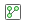

Branch Manager
View Git repository history and manage local and remote Git branches and repositories
Since R2025a
Description
The Branch Manager is an interactive tool for visualizing and managing local and remote Git™ branches, worktrees, and repositories.
Use the Branch Manager to:
Manage multiple Git repositories and create, merge, and delete branches.
Create, switch, merge, and delete branches or worktrees.
Rebase branches.
Find, compare, and squash commits.
Create branches and worktrees from a tag or a revision.
View the history of a Git repository.
Manage multiple Git repositories at the same time.
Manage remote repositories from local Git repositories.
Add, edit, and delete remote repositories.
Fetch from all remotes or individual remotes.
Prune remote branches from all or individual remotes.
Open remotes in a web browser.
Create new local branches that track remote branches.
Delete remote branches.
Convert a shallow clone into a full clone.
Manage and work with submodules in Git repositories.
Add submodules to a Git repository.
Update a submodule to the commit specified by the parent Git repository.
Open the Branch Manager
Open the Branch Manager from one of these locations:
In the Source Control panel, in a Git repository, click the Branch Manager button .
If the Source Control icon is not in the sidebar, click the Open more panels button and select the Source Control panel.
In the Files panel, right-click and select Source Control > Branch Manager.
In the Project panel, right-click and select Source Control > Branch Manager.
In the Project toolstrip, in the Source Control section, click Branch Manager.
Examples
Related Examples
Version History
Introduced in R2025a